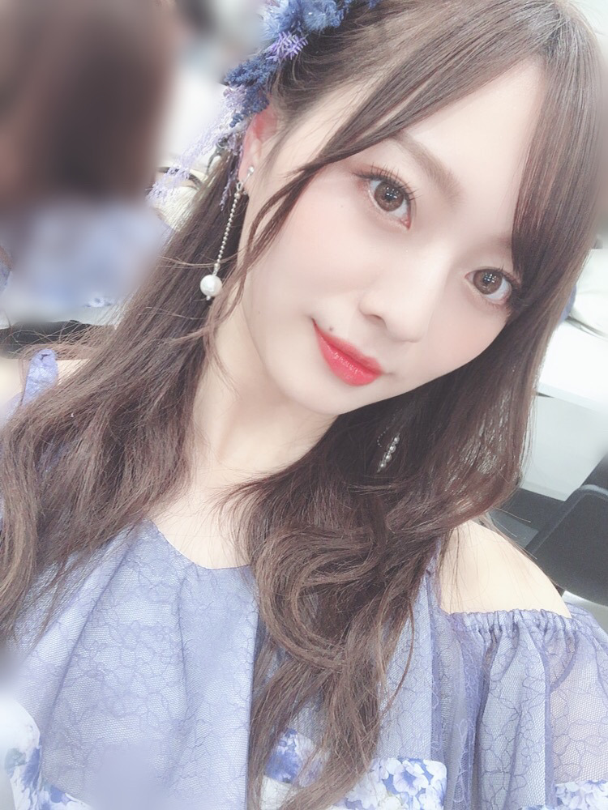
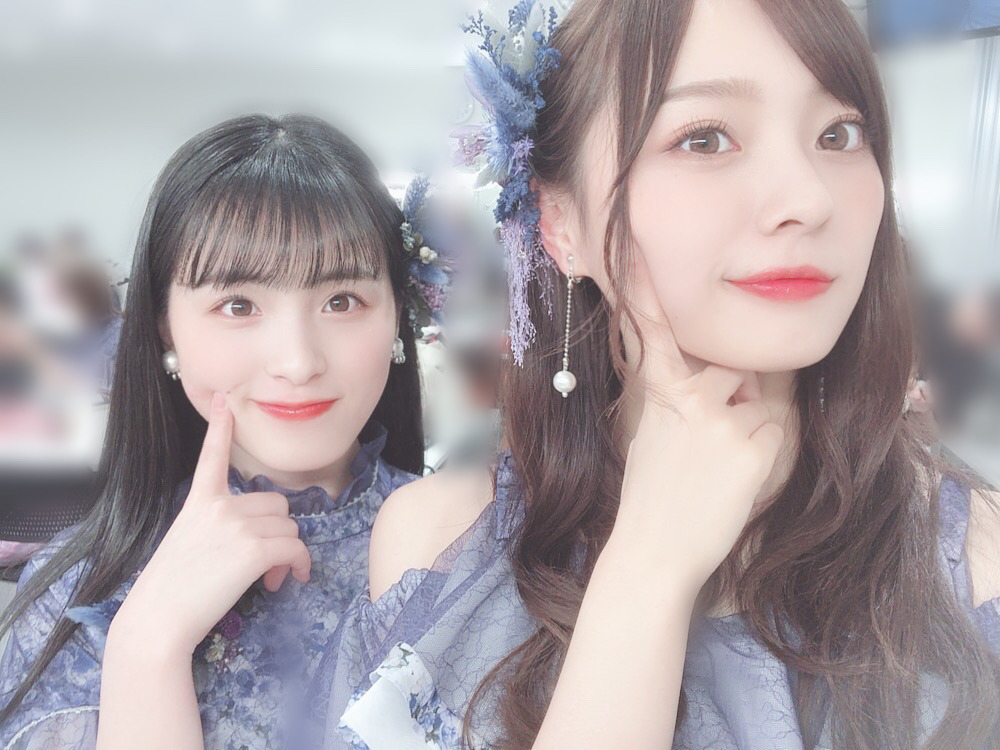
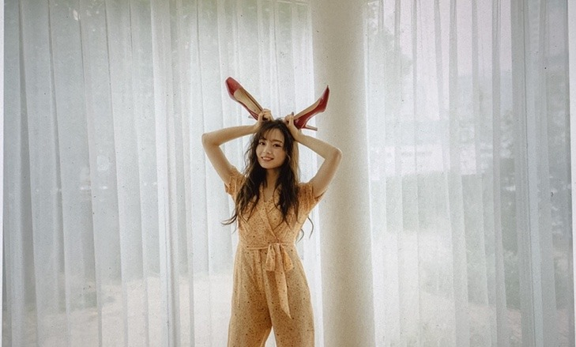
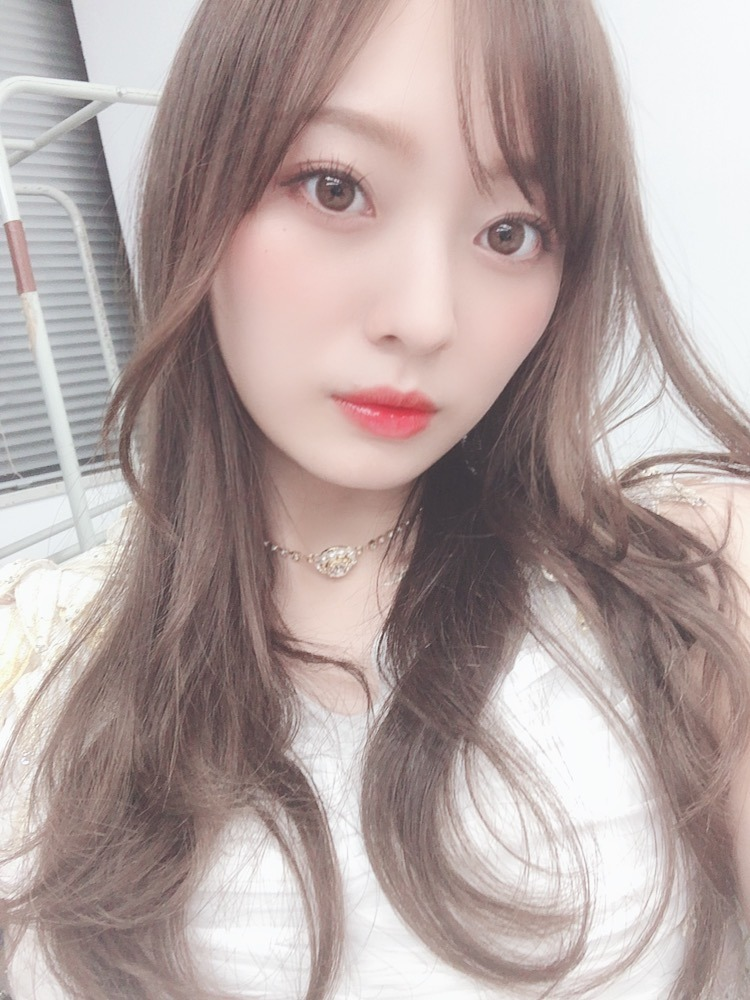
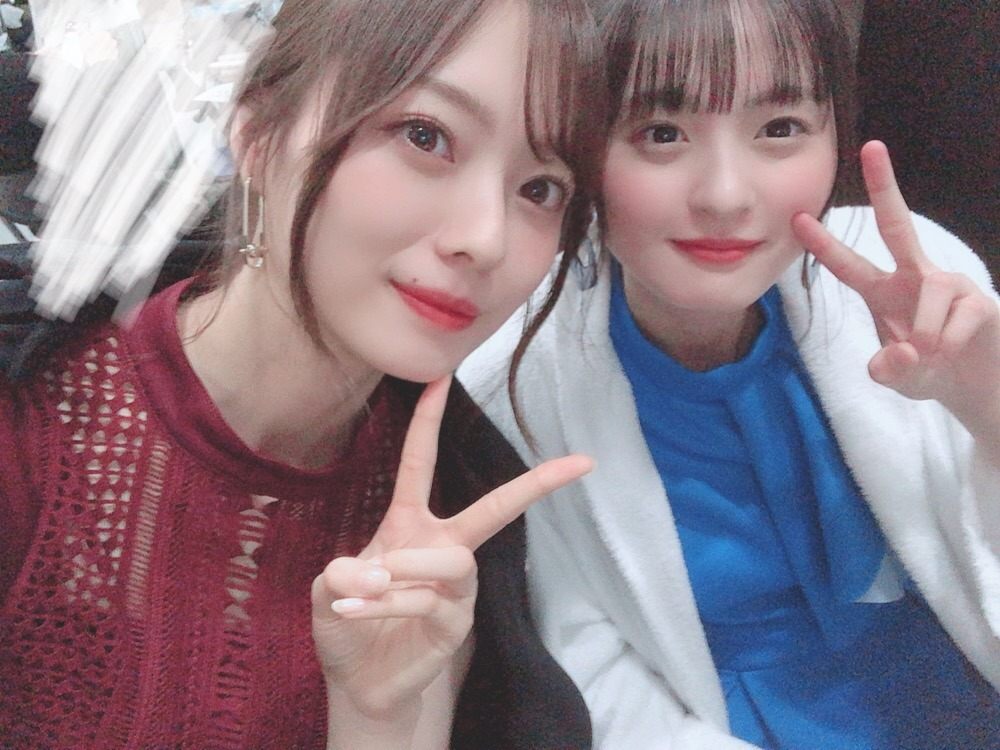

日々の隙間に

Premium Music 2020
ありがとうございました！
新衣装でした。
物凄く好きです！
色んな形のパターンがあるけど
どれも可愛かったなあ。
歌番組の告知をさせてください。
２／２８ 「CDTV」
TBS系 24:58〜
TBS系19:00〜
３／３１ 「うたコン」
NHK総合19:57〜
４／３ 「ミュージックステーション 3時間スペシャル」
テレビ朝日系 19:00〜
４／５ 「シブヤノオト」
NHK総合 24:05〜
盛りだくさんです！有難いです。
ぜひ、ご覧下さい！

ももこ〜
最近の歌番組ではほとんど一緒のリップ付けてるんです〜
本日、with ５月号発売です！
今月は、
「春ワンピMUST BUY 30」
「乃木坂OLプロジェクト第19弾 オフィスで映えるブラウス&シャツコーデ」
「大人のキュロット入門」
の企画に出させていただいております！
春ワンピの企画では
由依さんと紙面共演させていただいてます❤︎
そして本日３／２８ 発売の
with ５月号で、専属モデルを
務めさせて頂いてから１年が経ちました！

専属決定号の撮影のとき。
懐かしいなあ。
毎月の撮影が楽しくて楽しくて、
仕方がありません！
自分の中で、with専属モデルになれたことは
大きな自信に繋がりました。
グループ外で一人で務める責任感。
コンプレックスだった身長をコンプレックスに感じない場所、存分に活かせる場所。
何よりこんなにも大きな夢が叶ったとき、
喜びを共有できる方達の存在が
とても嬉しく幸せでした。
参加してみたい企画、沢山あります！
この場でもっともっと成長できるよう
今後も楽しみながら、
読者の皆様にファッションや美容をお届けできたらなと思います❤︎
まだまだ未熟ですが、
大好きなwithに少しでも貢献できるように
これからも精一杯務めさせて頂きます！
そして来月号、
小林由依さんと二人で
初表紙を務めさせて頂きます、、！
本当にありがとうございます(；；)
まだ実感が湧きません、、
撮影の楽しさは、
きっと誌面から伝わるかと思います。
緊張もしますが、、完成が楽しみです。
ネット予約も時期始まるかと思いますので
皆様ぜひ、ぜひゲットしてください！
昔からメイクはピンク派で
アイシャドウ、チーク、リップ、全て
ピンク系や赤系で仕上げていた私ですが
最近はオレンジにハマっております。
肌もマット派だったのが、
今やツヤが綺麗に出るハイライトにもハマっております。
好みは変わるものですね〜

写真だと伝わりにくいですね。
またコスメやら載せようかな、、？
質問などあれば、ぜひコメントに☀︎
では。
また更新します！

さくらちゃん〜。たまらなく可愛いです。
ジャケ写撮影のときの。
赤と青︎︎︎︎✌︎
歌番組を通して
音楽の力を皆でお届けしますね。
たくさんの笑顔のきっかけになりますように。
Original：https://www.nogizaka46.com/s/n46/diary/detail/55497?ima=4940&cd=MEMBER